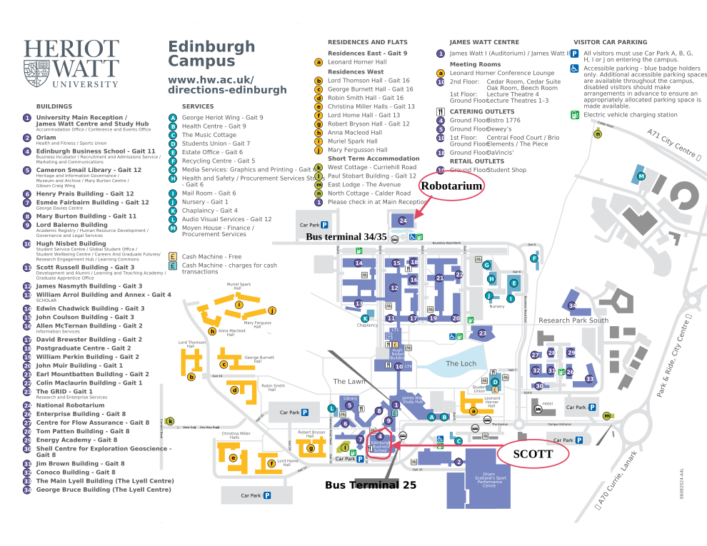
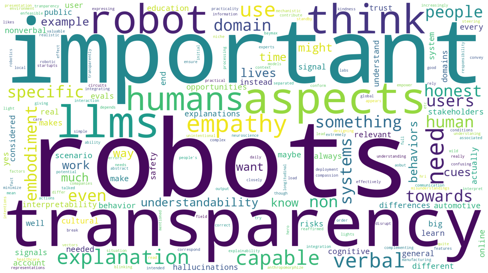
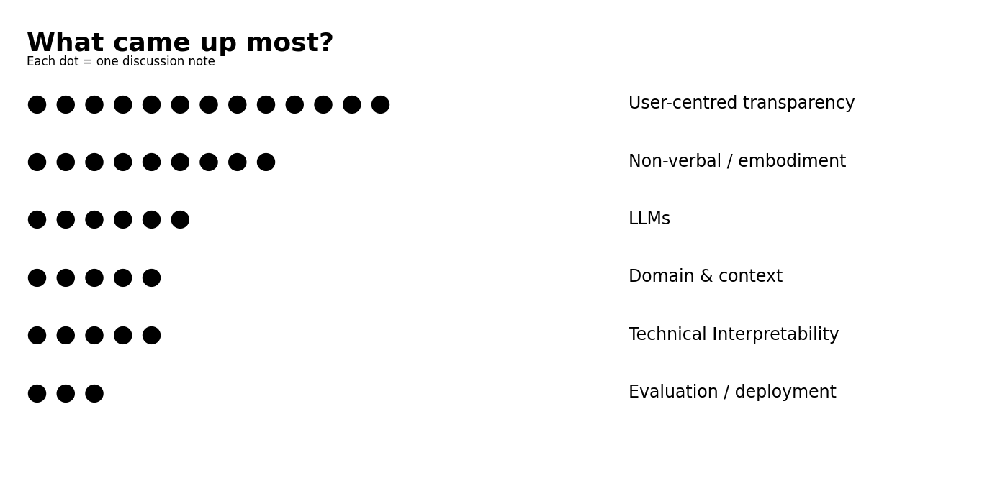

Hybrid Workshop at HRI '26, March 16, 2026, Edinburgh, Scotland, UK.
As robots become increasingly autonomous and integrated into everyday human environments, understanding how and why they behave as they do is critical for establishing trust, safety, and effective collaboration. The Designing Transparent and Understandable Robots (D-TUR) workshop aims to bring together researchers interested in improving robot understandability across physical and social contexts of Human–Robot Interaction (HRI).
The workshop will explore design, perception, and evaluation of transparency and understandability in robots—bridging insights from cognitive science, social robotics, machine learning, and human–computer interaction. We encourage participation from both academia and industry, to foster interdisciplinary dialogue on creating robots that communicate intent, uncertainty, and reasoning processes in ways that are intuitive to diverse users.
This workshop will follow a hybrid format, allowing for participation both in-person and remotely. Please stay tuned for details regarding the remote session.
Main Topics of Interest:
We are pleased to introduce our exteemed keynote speakers
Dr. Henny Admoni is an Associate Professor at the Robotics Institute at Carnegie Mellon University, where she leads the Human And Robot Partners (HARP) Lab. Her work focuses on enabling more intuitive human–robot collaboration by interpreting human behaviors such as eye gaze, gestures, and language. Through her research, Prof. Admoni aims to improve how robots understand and respond to people in real-world settings, especially in assistive and collaborative environments.
Dr. Alessandra Rossi is an Assistant Professor at the University of Naples “Federico II”. Her research lies at the intersection of human–robot interaction, explainable artificial intelligence, and social robotics. She investigates how adaptive explanations influence human trust in robots, with the goal of making robot behavior more understandable and relatable. Prof. Rossi is also active in international collaborations and scientific initiatives aimed at promoting transparency and ethical interaction in robotics.
Date: March 16, 2026 (Half-day Workshop), Room: SCOTT
Here is the zoom room for online attendees: https://kth-se.zoom.us/j/65003525010
| 09:30 - 09:35 | Welcome and introduction to the workshop |
| 09:35 - 10:10 |
Keynote 1 and Q&A — Dr. Henny Admoni, Carnegie Mellon University: Shaping Interactions Through Theory of Mind Modeling |
| 10:10 - 10:55 | Paper presentations: 1. Schema-Based Understandability in HRI: A Cognitive Framework 2. Clap Twice for Trust: How Framing Shapes Perceived Trustworthiness in VR-mediated Industrial Human-Robot Interaction 3. Towards a Framework for Studying Alignment Drift in Multi-Turn HRI 4. Adapting explanations’ level of detail in a longitudinal in-the-wild office delivery robot: Ongoing results 5. Don't Go Breaking My Trust: A Taxonomy of Interaction Failures for Transparent Robots 6. Designing for Transparency in HRI: A Dashboard and Custom Hardware for Mechanistic Interpretability 7. The ERROR-MM Project: Exploring Robotlike Robot Behaviours in Users’ Mental Models 8. MEMOR-E: A Personalized Assistive Robotic Support System for Alzheimer’s Care 9. Automatic Early Detection of Explanation Needs in Human–Robot Interaction 10. Dance2Hesitate: A Multi-Modal Dataset of Dancer-Taught Hesitancy for Understandable Robot Motion |
| 10:55 - 11:10 | Coffee break and networking |
| 11:10 - 11:45 |
Keynote 2 and Q&A — Dr. Alessandra Rossi, University of Naples “Federico II”: Transparent and personalised robot behaviours for trustworthy interactions |
| 11:45 - 12:30 | Interactive break-out sessions |
| 12:30 - 12:55 | Discussing the break-out session results |
| 12:55 - 13:00 | Concluding remarks |

The interactive break-out sessions will allow workshop participants to discuss their experiences and challenges with making robot behavior understandable in smaller groups. Questions will be provided to focus discussions on open problems. Example questions include:
Further questions will be based on the presented submissions to increase engagement. During the break-out sessions, the organizers of the workshop will actively participate and help guide the discussions when necessary. Online participants will have their own break-out room to make communication easier. We aim to encourage all participants to share their experiences and thoughts, allowing us to discuss open problems from various perspectives. Each group will be asked to summarize the main points of their discussions afterwards in a general discussion with all attendees.
We invite short paper submissions (up to 6 pages) presenting original, ongoing, or position work on transparency, understandability, and explainability in human–robot interaction. Topics of interest include theoretical frameworks, experimental studies, design case studies, and applications related to understandability of robots in physical and social HRI.
The D-TUR workshop will follow a hybrid format, allowing for participation both in-person and remotely. This workshop targets researchers, designers, and practitioners from fields such as Human–Robot Interaction, Explainable AI, Robotics, Cognitive Science, and Human–Computer Interaction. We particularly welcome contributions from interdisciplinary teams interested in both technical and human-centered perspectives on robot understandablity and transparency.
Manuscripts should be written in English and follow the general ACM SIG format ("sigconf", double column format). Manuscripts will undergo a double-blind review, authors should ensure that they anonymize their submissions according to the HRI Anonymization Guidelines. Submissions should be up to 6 pages (excluding references). Accepted papers will be presented as short talks, and will be included on the workshop website.
To accommodate authors aiming for the early-bird HRI registration deadline, we provide two submission tracks: an early track synchronized with the early-bird registration for HRI 2026 and a regular track with a later deadline.
Submission Webstite: OpenReview
In case of questions, please contact: dtur.workshop.hri@gmail.com
Robots are entering hospitals, airports, classrooms and homes, yet a persistent barrier to effective human–robot interaction is often not capability itself, but whether people can make sense of robot behaviour quickly enough to coordinate with it. Prevailing work in HRI and explainable AI has largely treated this as an information-disclosure problem: the assumption is that revealing more of a system’s internal reasoning will improve understanding. We argue that this framing overlooks how people interpret behaviour under real-time constraints. Drawing on cognitive schema theory, we define robot understandability as the user’s ability to form a timely, workable interpretation of what the robot is doing, sufficient to anticipate what it will do next and respond appropriately, without access to its internal decision process. We propose a schema-alignment framework organised around four interdependent schemas that structure social sensemaking: context, role, procedure and strategy. Across case studies in embodied social robotics and large language model (LLM) interaction, we show that coordination breakdowns - pauses, errors, and interactional repairs - arise when system cues fail to support the schemas users rely on. We use LLM interaction as a useful comparison because it removes the demands of embodiment and helps isolate breakdowns that may reflect more general processes of sensemaking. At the same time, the comparison has clear limits: embodied robots introduce additional demands, including coordination in shared physical space and the interpretation of nonverbal cues, such as gaze and gesture. Together, these arguments reframe understandability as a problem of interactional cueing rather than information access, and provide a psychologically grounded basis for robot design.
Trust is a crucial element in industrial human-robot interaction, yet little is known about how initial system descriptions shape perceived trustworthiness of the system, not only before use. Trans- parency about a system’s capabilities is crucial for reaching appro- priate reliance and perceived trustworthiness. This paper under- lines the importance of what users are told about a system before their first contact. This information shapes their expectations about the robot and early reliance. Thus, this study investigates how the verbal framing of an industrial robot—either as a low-capability prototype or a high-capability advanced technology—shapes per- ceived trustworthiness of the system. Utilizing a VR simulation of a poultry packing robot, participants (N=21) interacted with an iden- tical system. Notably, participants working with the high-capability framing rated the system as significantly more competent, showed higher reliability ratings, and also tended to express trusting be- havior sooner than those interacting with the system framed as a low-capability prototype. The results show that communicated competences affect perceived trustworthiness and trusting behavior in a simulated, VR-mediated industrial human-robot interaction. Based on those findings, we argue for the relevance of proper fram- ing, as, e.g., improper framing poses a risk of a miscalibration when system performance does not match its framing. Framing, thus, we argue, is an under-valued dimension of evaluating trustworthiness in (industrial) HRI.
Foundation models are increasingly integrated into autonomous and social robots where behavior often emerges over extended voice-based human–robot interaction rather than from isolated, single-prompt instructions through text-based interfaces. Large Language Model (LLM) alignment refers to the aim of ensuring that models adhere to human preferences and restrictions, producing outputs that are helpful, honest and harmless. Many existing model alignment techniques are still primarily evaluated for LLMs in single-turn settings, in multi-turn adversarial contexts, or in text-based chatbot scenarios. These provide limited insight into how model alignment is sustained under realistic long-term human-robot interactions, where conversational history and social dynamics shape future model behavior. This paper examines current methodological challenges for studying alignment drift in long-term human-robot interactions. We argue that existing multi-turn evaluation techniques primarily focus on adversarial jailbreak scenarios, providing limited insight into how alignment may shift gradually through naturalistic, feedback-driven interaction. To address this gap, we propose a multi-agent framework for generating synthetic, HRI-focused multi-turn conversations. Using the resulting data, we aim to study alignment drift at the representation-level by modeling each interaction as a trajectory in activation space and analyzing turn-by-turn dynamics. By linking observable conversational behavior to internal representational changes, the approach aims to provide methods for improving transparency and interpretability in long-term human–robot interaction with generative models.
We present an ongoing longitudinal in-the-wild study of an office delivery robot that adapts the level of detail of its explanations to users of failure or unexpected events. We compare three explanation strategies: minimal “what happened” explanations, fully detailed including “what + why” reasons, and a personalised variant that tailors detail based on tracked user knowledge. Additionally, some users can request on‑demand extra follow-up explanations. Ongoing results from the first two weeks indicate that personalised explanations preserve both subjective and objective understanding while providing a level of detail closer to correct when compared to fully detailed explanations. Moreover, users who receive personalised explanations request fewer extra follow-up explanations compared to the group receiving minimal explanations. Full study results will confirm these results and provide their evolution through the next 2 weeks of deployment.
As robots become integrated into everyday environments, interaction failures are inevitable. However, current robotics design often treats failures as technical bugs rather than interactive mistakes. When these errors are presented in technical terms, users might not be able to understand them, reducing trust and the ease of the interaction. To address this, we present a preliminary, multidimensional taxonomy of HRI failures. Based on team brainstorming and literature, our framework classifies failures across three core system capabilities: Perception, Cognition, and Execution. Crucially, it attributes these failures not solely to the robot, but also to human and environmental factors, while assessing their impact on user trust and safety. By pinpointing the exact nature and origin of an error, this taxonomy provides the vocabulary needed to equip robots with targeted, context-aware explanations, advancing the design of transparent and understandable human-robot interaction.
As embodied AI systems transition from deterministic automation to fluid decision-making driven by systems such as Vision-Language-Action (VLA) models, the inherent opacity of these "black box" systems creates significant barriers to safe and effective human-robot interaction. This paper argues that transparency should not be a post-hoc addition, but a foundational design constraint integrated into the robot's physical and digital architecture. We present a humanoid demonstrator built on the Unitree G1 platform that embodies this holistic design philosophy. Our approach combines custom industrial hardware, including a specialised head unit with a Face User Interface (Face UI) for social signaling, with a real-time digital dashboard that translates complex AI reasoning into natural language and visualises the perception-to-actuation pipeline. To evaluate the efficacy of this multi-layered transparency design, we conducted a user study (N=10) comparing the fully transparent system against a baseline lacking the social interface and dashboard. Results indicate that our architecture improved transparency and understandability of the robot during interaction. These findings suggest that tailoring transparency mechanisms to specific user contexts is critical for the successful deployment of autonomous systems in shared human spaces.
Design aims to align the user's mental model with the actual behaviour of a device to reduce the gap between user expectations and observed behaviour. In robotics, because of the anthropomorphic attributions that humans make towards robotic machines, humanlikeness has been one of the main heuristics to guide the design of robots, regarding their embodiment as well as their behaviours. Although humanlike design has many proven advantages, it also comes with disadvantages, such as being potentially deceitful regarding the robot's true capabilities. Recently, a new paradigm of robomorphism has been proposed that speculates on the attribution of robotlikeness to things. The ERROR-MM project will explore this novel idea of robotlikeness and test its effect on the accuracy of human mental models of robots. Specifically, starting with movement, as it is the basis of any robotic behaviour, the project aims to test the hypothesis that a robot employing robotlike behaviours will lead humans to form better mental models of a robot's true capabilities than a robot that employs humanlike behaviours.
In human-robot collaboration, a robot's expression of hesitancy is a critical factor that shapes human coordination strategies, attention allocation, and safety-related judgments. However, designing \textsl{hesitant} robot motion that generalizes is challenging because the observer's inference is highly dependent on embodiment and context. To address these challenges, we introduce and open-source a multi-modal, dancer-generated dataset of \textsl{hesitant} motion where we focus on specific context-embodiment pairs (i.e., manipulator/ human upper-limb approaching a Jenga Tower, and anthropomorphic whole body motion in free space). The dataset includes (i) kinesthetic teaching demonstrations on a Franka Emika Panda reaching from a fixed start configuration to a fixed target (a Jenga tower) with three graded hesitancy levels (slight, significant, extreme) and (ii) synchronized RGB-D motion capture of dancers performing the same reaching behavior using their upper limb across three hesitancy levels, plus full human body sequences for extreme hesitancy. We further provide documentation to enable reproducible benchmarking across robot and human modalities. Across all dancers, we obtained 70 unique whole-body trajectories, 84 upper limb trajectories spanning over the three hesitancy levels, and 66 kinesthetic teaching trajectories spanning over the three hesitancy levels. The dataset can be accessed here: https://brsrikrishna.github.io/Dance2Hesitate/.
Alzheimer’s disease is a neurodegenerative disorder characterized by progressive declines in memory and language that reduce independence in daily life, motivating the development of socially assistive robotic support. This paper presents MEMOR-E, a mobile quadruped robot equipped with an interactive tablet interface designed to assist patients and caregivers through medication reminders, routine guidance, memory-oriented interactions, and companionship. We evaluate the feasibility of fine-tuning large language models (LLMs) to emulate stage-consistent cognitive behavior and interpret responses across standard neuropsychological language tasks using audio transcriptions from 235 Alzheimer’s patients along with synthetically generated healthy controls. Additionally, we investigate the use of in-context learning (ICL), where a second LLM generates domain- and severity-level cognitive error summaries. Our results show that MEMOR-E can produce stage-aware, non-diagnostic cognitive summaries that support personalized assistive interactions, while explainable AI mechanisms translate model outputs into transparent, human-readable evidence to enable caregiver oversight and trustworthy human–robot interaction.
Enabling robots to display the reasoning behind decisions requires them to detect when explanations are needed by users. A crucial driver of explanation need is that it often manifests implicitly: users exhibit behavioural signals indicating misalignment well before they explicitly request an explanation. Psychological studies show that in human interactions, such needs are sensed through multimodal cues and addressed through the co-construction of explanations in real time. Building on this, we introduce an approach for the early detection of explanation needs in HRI. Our method recognises when an explanation is likely to become necessary, enabling robots to act proactively. We evaluate the approach on an existing HRI dataset using features describing facial expressions, body movement, and vocal behaviour, combined with time-series classification techniques. Our results show that different classes of learning algorithms (unsupervised anomaly-based methods and supervised classification models) offer complementary strengths for detecting explanation needs. In particular, unsupervised methods enable early warning signals when labels are unavailable, while supervised models provide stronger discrimination (AUROC 0.7) when annotated data is available. We discuss the implications of these findings for the development of explanation-capable robots and outline future directions for proactive explanations in HRI.
KTH Royal Institute of Technology, Sweden
University of Massachusetts Lowell, USA
KTH Royal Institute of Technology, Sweden
King’s College London / Imperial College London, UK
King’s College London / Imperial College London, UK
King’s College London, UK
King’s College London, UK
KTH Royal Institute of Technology, Sweden
KTH Royal Institute of Technology, Sweden
Workshop Contact: dtur.workshop.hri@gmail.com
Designing Transparent and Understandable Robots (D-TUR) — HRI '26, Edinburgh, Scotland, UK.
Beyond the keynotes and paper presentations, we ran an interactive discussion section at the Workshop on Designing Transparent and Understandable Robots at HRI '26 in Edinburgh.
We split the 60 workshop participants into small groups of approximately five people. This allowed participants to make new connections and facilitated interactions between researchers from academia and industry at various stages in their careers. Halfway through the free-discussion times new groups were formed to encourage discussing with more people. Participants were encouraged to add their group's thoughts and ideas to an online discussion board, where they could also leave comments and ask clarification questions.

Word cloud based on the online discussion board.
Three themes occurred most commonly across people's posts.

Number of discussion-board notes per theme.
During the discussion, workshop participants not only found answers and exchanged ideas, but also raised new questions:
We hope to facilitate further discussions on these topics in future iterations of our workshop on Designing Transparent and Understandable Robots.